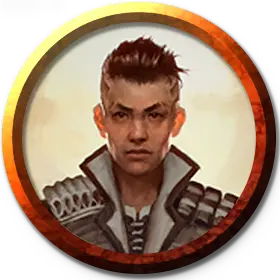

Профессор сияния Сильверквилла
Silverquill Professor of Radiance
Маленький или Средний Гуманоид (Бард), любое мировоззрение

Класс Доспеха 12 (15 с доспехом мага)
Хиты 97 (15к8 + 30)
Скорость 30 футов
| мод | спас | ||
|---|---|---|---|
| СИЛ | 11 | +0 | +0 |
| ЛОВ | 14 | +2 | +5 |
| ТЕЛ | 14 | +2 | +2 |
| мод | спас | ||
|---|---|---|---|
| ИНТ | 16 | +3 | +6 |
| МДР | 13 | +1 | +4 |
| ХАР | 19 | +4 | +7 |
Навыки Выступление +10, Магия +6, Обман +7, Убеждение +10
Сопротивление урону излучение
Чувства пассивное Восприятие 11
Языки Общий, и ещё четыре любых языка
Опасность 7 (2900 опыта)
Бонус мастерства +3
Действия
Мультиатака. Профессор совершает две атаки Сияющим ударом. Профессор может заменить одну из атак накладыванием заклинания.
Сияющий удар. . Рукопашная или дальнобойная атака заклинанием: +7 к попаданию, досягаемость 5 футов или дистанция 120 футов, одна цель. Попадание: 17 (3к8 + 4) урона излучением. Если целью является существо, оно должно преуспеть в спасброске Телосложения Сл 15, иначе станет ослеплённым до конца своего следующего хода.
Использование заклинаний. Профессор накладывает одно из следующих заклинаний, используя Харизму в качестве базовой характеристики (Сл спасброска от заклинаний 15):
• Неограниченно: пляшущие огоньки [dancing lights], дружба [friends];
• 2/день каждое: благословение [bless], приказ [command], лечение ран [cure wounds], дневной свет [daylight], доспехи мага [mage armor];
• 1/день каждое: гипнотический узор [hypnotic pattern], языки [tongues].
Описание
Профессора сияния призывают магию с помощью произносимых слов и символов, сформированных из чернил и света магической формы. Профессора направляют сияние, чтобы осветить своих союзников, поддерживая их ободрением и вдохновляя всех, кто становится свидетелем их выступлений. Профессора сияния могут превратить свои слова в мощное оружие в битве или поразить своих врагов обжигающим сиянием.
Эти преподаватели Сильверквилла стремятся вдохновлять на величие во всем, что они делают, подталкивая своих учеников искать хорошее во всем и выносить это на свет.
УЧЁНЫЕ СИЛьВЕРКВИЛЛА
Ученые факультета Сильверквилл изучают силу магии, выраженную в устных и письменных словах. Они используют эту силу либо для того, чтобы освещать и направлять, либо для того, чтобы затемнять и деморализовывать.